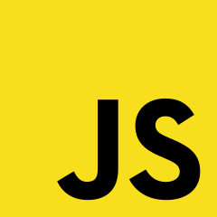
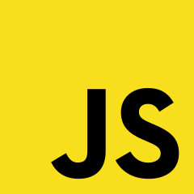

Hello
everyone
,
welcome
to
my
gallery
This portfolio was crafted with modern web technologies—HTML, CSS, and JavaScript.
Discover my work and background below!
About me
 (1).jpg)
Hello, my name is Valentino banyu ampar paraya, you can call me banyu.
I'm from pontianak kalimantan barat.
I am currently studying Computer Science at Sanata Dharma University in Yogyakarta, Indonesia.
I am deeply passionate about front-end development and am continuously learning to improve my skills.
If you hire me for your front-end projects, I will ensure your satisfaction. Please forgive any imperfections as I am still growing in this field.
You are welcome to pay any amount you deem fair—or even nothing if you're unsatisfied with my work.This portfolio will be regularly updated throughout my academic journey. Your trust and happiness are my top priorities!
Skills I've mastered so far
 my JS abilities through
my JS abilities through
projects and study ')">

education

I am presently enrolled as an active student at Sanata Dharma University,
pursuing a degree in Computer Science.
experience
While I don't have any formal work experience yet, I consider every project I work on as valuable experience. I truly appreciate your guidance in helping me develop my skills. This information will be continuously updated as I gain more experience.